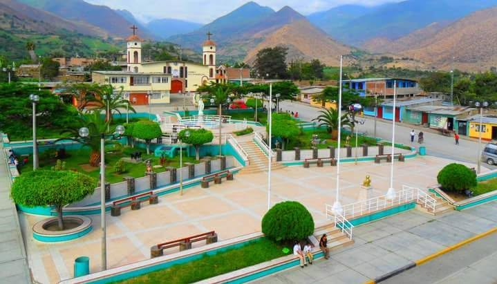

Nuestro pueblo

|
Jimbe es un lugar donde la historia la naturaleza y la vida comunitaria forman parte de la identidad de sus habitantes. Sus paisajes y actividades tradicionales representan el esfuerzo de su población. Es un pueblo que reúne clima agradable, paisajes impresionantes, lagunas altoandinas patrimonio arqueológico y tradiciones vivas. Cada uno de sus atractivos permite descubrir una faceta diferente de Áncash y apreciar la riqueza natural y cultural que conserva esta localidad. La identidad de Jimbe está relacionada con su historia, sus costumbres y el esfuerzo de sus habitantes. Las actividades familiares y comunitarias contribuyen a fortalecer los lazos entre vecinos. La naturaleza también ocupa un lugar importante en la vida de la población. Los paisajes, las montañas y los cursos de agua forman parte del entorno que debemos cuidar y proteger |
VISITA JIMBE |
Datos de Jimbe
| Dato | Información | |
|---|---|---|
| Localidad | Jimbe | |
| Distrito | Cáceres del Perú | |
| Provincia | Santa | |
| Departamento | Áncash | |
| País | Perú | |
Jimbe - Cáceres del Perú - Santa - Áncash
Conoce, valora y cuida nuestras tradiciones.Todos los derechos reservados.